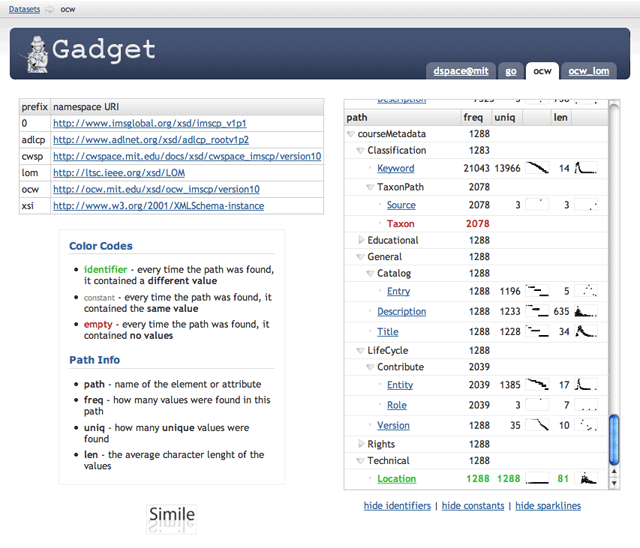

Gadget is an XML inspector. [sound of inspector gadget theme playing in the back]

When you want to have a condensed representation of (normally, a lot!) of well-formed XML data.
This is normally useful in situations like:
I was given the task of transforming a few hundred Mb of XML into RDF and I found out (the hard way!) that with that amount of data things start to break down: you need radically different approaches since you can't simply open your 100Mb XML document in your browser to take a look at it.
Before writing Gadget I used a collection of 12-stages-long grep+sed+sort+uniq pipelines to understand what I had in that big XML pile, but that started to become a little cumbersome so I wrote this.
Gadget is built with scalability in mind and, in theory, there is no limit to the amount of data it can handle. In practice, once the indexer starts hitting the disk things slow down considerably. If you can give your JVM as much as RAM as your XML data, you should be fine and the indexer should be very fast (1Mb/sec). If not, the indexer will start hitting the disk and it can even become a few orders of magnitude slower (10Kb/sec).
The indexer is the heavy-lifter; once that is done, the web application runs only off the indices and therefore is very fast and can scale to a lot of concurrent access. It is also completely stateless so it can be heavily parallelized horizontally in clusters would such a need emerge.
Gadget is composed of two parts, a command line application to index the data and a web application to browse/search the results of the indexing process. Both are written in Java and they require:
Follow me to the user guide where we'll see what we can do with this.
You can obtain Gadget in two different ways:
In case you want to download the files from the repository (for example, if you want to have the latest and greatest development snapshot), you need to have a Subversion client installed. At this point, just type
svn co http://simile.mit.edu/repository/gadget/trunk/ gadget
at the command line and the latest gadget distribution will appear in the "gadget" directory.
Gadget is open source software and is licensed under the BSD license located in the LICENSE.txt file located in the root of the distribution.
Note however that this software depends on libraries that are not released under the same license. If you redistribute the software it's up to you to make sure that your redistribution complies to the sum of all the requirements not just to the ones of the Gadget license.
This software was created by the SIMILE project and originally designed, conceived and written by:
Many thanks to David François Huynh <dfhuynh at csail.mit.edu> for the precious feedback on UI design and usability.